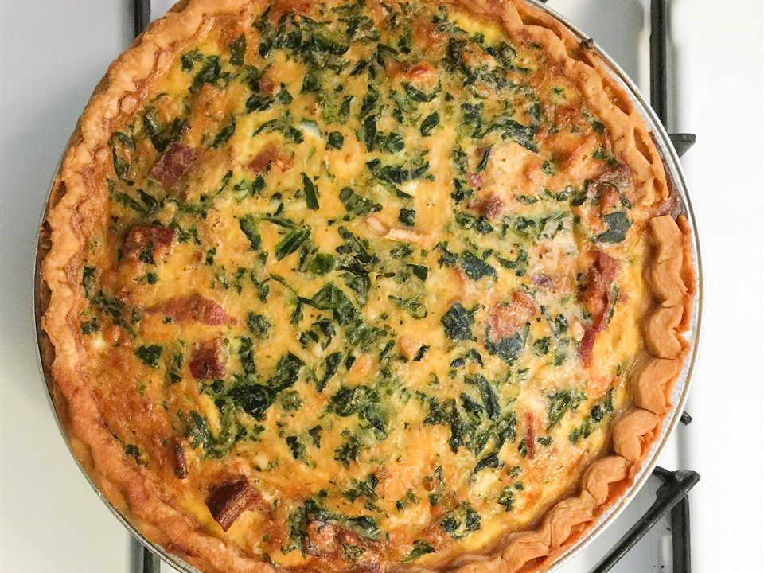

Spinach Bacon Quiche

Description
This spinach bacon quiche is the best-tasting quiche I have had in years. A friend of mine made this, and I just had to have the recipe. Great for brunch or for a light dinner with a cup of soup.
Ingredients
- 3/4 pound sliced bacon
- (9 inch) single refrigerated pie crust
- 6 large eggs, beaten
- 1 1/2 cups heavy cream
- 5 dashes hot pepper sauce, or to taste
- salt and ground black pepper to taste
- 1 (10 ounce) package frozen chopped spinach - thawed, drained and squeezed dry
- 1/2 chopped green onion
- 1/4 cup grated Parmesan cheese
Steps
- Preheat the oven to 375 degrees F (190 degrees C).
- Place bacon in a large, deep skillet, and cook over medium-high heat, turning occasionally, until evenly browned, about 10 minutes. Drain bacon slices on a paper towel-lined plate. Chop when cool.
- Fit pie crust into a 9-inch pie dish and set aside.
- Whisk eggs, cream, hot pepper sauce, Worcestershire sauce, salt, and pepper together in a bowl.
- Spread spinach over the bottom of pie crust. Top with bacon, Cheddar cheese, and green onion; pour in egg mixture and sprinkle with Parmesan cheese.
- Bake quiche in the preheated oven until the top is lightly puffed and browned, and a knife inserted into the center of the quiche comes out clean, 35 to 45 minutes.